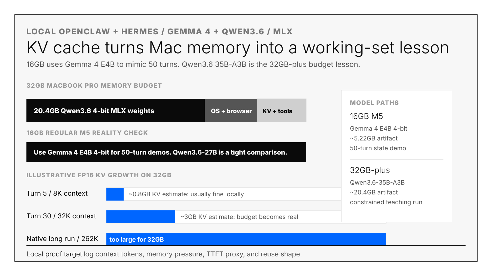
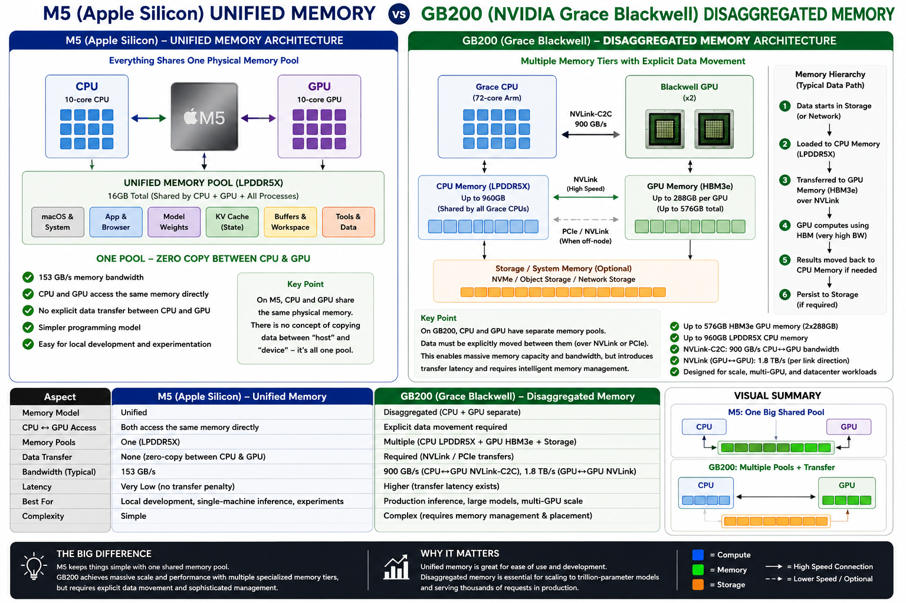

The frame
There is no universal "best inference setup." The right optimization depends on the exact recipe: model architecture, quantization, prompt length, tool-loop behavior, hardware memory layout, runtime cache design, and what evidence you can actually collect.
Gemma 4 E4B on a 16GB M5 MacBook Pro, Qwen3.6-35B-A3B on a 32GB-plus Mac, Kimi K2.6 on GB200 or GB300, and a 50-turn OpenClaw marketing agent are not variants of the same benchmark. They are different systems problems. The optimizer has to ask different questions for each one.
Different models, quantizations, workloads, and hardware memory hierarchies require different optimization plans. That is the lesson.

Step 1: How do you name the exact inference recipe before debugging?
Write down six fields before you touch anything: model, quantization, workload, hardware, runtime, and claim. "Run a local model" is not specific enough to debug. "Run Gemma 4 E4B 4-bit with a 50-turn OpenClaw-style loop on a 16GB M5 MacBook Pro and record proxy L0/L1/L2 reuse columns" is. The four recipes below are concrete instances.
| Recipe | What changes technically | Optimization target | Do not claim |
|---|---|---|---|
Gemma 4 E4B on 16GB M5mlx-community/gemma-4-e4b-it-4bit |
Smaller 4-bit VLM artifact leaves room for OS, browser, prompt buffers, and repeated state. | Show the 50-turn KV/state lifecycle on the actual laptop. | Do not claim Qwen3.6 long-context performance, LMCache MP behavior, or vLLM/Mooncake behavior. |
Qwen3.6 27B on 16GB M5Open4bits/Qwen3.6-27B-mlx-4Bit |
Weights dominate the 16GB budget before long-context tool state becomes comfortable. | Demonstrate why "model fits" is not the same as "agent workload fits." | Do not treat this as a comfortable 50-turn long-context laptop setup. |
Qwen3.6-35B-A3B on 32GB-plusmlx-community/Qwen3.6-35B-A3B-4bit |
MoE-style active-parameter behavior changes compute shape, while the artifact still consumes local memory. | Teach active weights, total weights, context, and KV budget as separate line items. | Do not treat "model loads" as proof that long-context agent serving works. |
| Kimi K2.6 on GB200/GB300 | Large context and fast Blackwell decode move the bottleneck toward repeated prefill, routing, and KV placement. | Measure distributed KV hits, transfer time, TTFT hit/miss, and cache-aware routing. | Do not use laptop proxy numbers as production latency or cost proof. |
Step 2: What happens during one inference turn, end to end?
Every inference turn moves through five phases: weights load, prompt assembly, prefill, decode, and next-turn reuse. Every optimization in this guide changes exactly one of those five phases. If you do not know which phase you are changing, you are guessing. The fifth phase (next-turn reuse) is where 50-turn agents actually fail.
- Weights: load quantized model weights into the available memory system.
- Prompt assembly: combine system text, tool schemas, retrieved docs, browser summaries, previous turns, and the new user request.
- Prefill: run the model over the input tokens and create KV state.
- Decode: generate new tokens while repeatedly reading KV state.
- Next-turn reuse: decide whether old KV/state is reused from the right tier or recomputed.
That fifth phase is the lesson. A 50-turn OpenClaw or Hermes agent is mostly old state plus a small new delta. If the stack cannot find the old state cheaply, it pays prefill again. The right fix might be a smaller model, more unified memory, a stable prompt layout, LMCache MP, Mooncake, SGLang prefix structure, or P/D transfer tuning. It depends on the recipe.
Step 3: How does Apple Silicon's memory hierarchy differ from datacenter GPUs?
Apple Silicon (M4/M5 family) gives the CPU and GPU one unified memory pool of 16-128GB at 153-614GB/s bandwidth. NVIDIA datacenter systems separate GPU HBM (80-288GB at 3.35-8TB/s), host DRAM, NVLink/PCIe transfer, and remote KV movement into distinct tiers. That hierarchy decides which optimization is even meaningful for your workload.

| Hardware | Memory layout | Optimization lesson |
|---|---|---|
| M5 MacBook Pro, 16GB10-core CPU, 10-core GPU, 153GB/s unified memory bandwidth. | One pool for macOS, model weights, KV state, browser, files, and tools. | Great for seeing working-set pressure. Bad for proving server offload behavior. |
| M5 Pro / M5 Max307GB/s on M5 Pro; 460GB/s or 614GB/s on M5 Max. | Bigger unified-memory pool and more bandwidth, still one Apple Silicon memory system. | Better for Qwen3.6, VLMs, exo experiments, and real local agent iteration. |
| M4 Pro / M4 Max273GB/s on M4 Pro; 410GB/s or 546GB/s on M4 Max. | Previous-generation unified memory. High-memory M4 Max remains very useful. | For local inference, memory capacity can matter more than the newer chip label. |
| H100 / H200H100 SXM has 80GB HBM and 3.35TB/s bandwidth; H200 SXM has 141GB HBM3e and 4.8TB/s. | GPU HBM and host DRAM are separate tiers with explicit transfer paths. | Validate vLLM, SGLang, LMCache, batching, prefill, decode, and TTFT with live counters. |
| B200 / GB200DGX B200 has 8 Blackwell GPUs and 1,440GB total HBM3e; GB200 NVL72 has 72 Blackwell GPUs and 13.4TB HBM3e. | Rack-scale CPU plus GPU memory hierarchy with NVLink, Grace CPU memory, Blackwell HBM, and remote movement. | Distributed KV, routing, P/D transfer, and locality dominate the engineering question. |
Step 4: How do you install the public Mac MLX KV cache demo?
Clone Touchdown-Labs/mac-mlx-kv-cache-stress-demo and run one of its two verified paths: the local
Mac/MLX OpenClaw proxy (small workload, real M5 memory pressure) or the GB200/Kimi K2.6/OpenClaw-shaped proxy
(production trace shape, no real GPU needed). Both write a 50-turn CSV in seconds with no auth.
git clone https://github.com/Touchdown-Labs/mac-mlx-kv-cache-stress-demo.git
cd mac-mlx-kv-cache-stress-demo
# Local Mac/MLX OpenClaw proxy.
uv run --python 3.11 --with psutil python -m kv_cache_stress_demo.run_loop
# GB200/Kimi K2.6/OpenClaw-shaped proxy.
uv run --python 3.11 --with psutil python -m kv_cache_stress_demo.run_loop \
--workload kimi-k26-gb200-openclaw \
--out runs/kimi_k26_gb200_openclaw_proxy.csvVerified locally: the Mac/MLX proxy wrote a 50-turn CSV and grew from 166 to 579 estimated prompt tokens. The GB200/Kimi/OpenClaw proxy wrote a 50-turn CSV and grew from 12,166 to 122,437 estimated prompt tokens with a 99.81% repeated-state share. These are workload-shape proxies, not production benchmarks.
Step 5: How do you install the Claude Code skill for this loop?
Clone the Touchdown Labs site repo and copy skills/qwen36-mac-kv-loop into ~/.claude/skills/.
The skill makes Claude Code provision a local experiment directory with fixtures, a smoke image, a CSV runner, and
LMCache/vLLM/SGLang-style proxy observability columns on demand. Activates next session.
git clone https://github.com/OCWC22/Touchdown-Labs-Site.git
cd Touchdown-Labs-Site
mkdir -p ~/.claude/skills
cp -R skills/qwen36-mac-kv-loop ~/.claude/skills/Step 6: How do you run the 16GB max-MLX observability profile?
Run the skill's provisioner with --profile 16gb-max-mlx-observability against a target directory,
then execute run_openclaw_loop.py. This is the recommended path for an actual 16GB M5 MacBook Pro.
It uses Gemma 4 E4B (5.22GB artifact) so the model leaves enough memory to study repeated state across 50 turns.
python ~/.claude/skills/qwen36-mac-kv-loop/scripts/provision_qwen36_kv_loop.py \
--target ~/mac-mlx-kv-observability \
--profile 16gb-max-mlx-observability
cd ~/mac-mlx-kv-observability
uv run --python 3.11 --with psutil python run_openclaw_loop.py
cat openclaw_kv_pressure.summary.json
On the verified local run, this profile wrote 51 CSV lines including the header. The prompt-token estimate grew
from 238 on turn 1 to 2,790 on turn 50. The summary JSON marks the run as observability_mimic: true
and warns that these are proxy columns, not live LMCache, vLLM, SGLang, MLX, or Dynamo counters.
Step 7: Which observability columns matter in the MLX KV cache CSV?
Open openclaw_kv_pressure.csv and read seven columns that name the production concepts: vLLM L0
prefix reuse, LMCache MP-style L1 reuse, remote/L2 reuse, lookup requested vs hit tokens (the hit-rate ratio),
recompute tokens, and a P/D transfer-time proxy. Each column is a teaching surface, not a live production counter.
vllm_l0_prefix_hit_tokens_est: local proxy for engine-owned prefix reuse.lmcache_mp_l1_hit_tokens_est: local proxy for shared host-side KV reuse.remote_or_l2_hit_tokens_est: local proxy for remote or lower-tier reuse.lookup_requested_tokens_estandlookup_hit_tokens_est: the numerator and denominator you need before claiming hit rate.recompute_tokens_est: the state the system failed to reuse in the proxy model.pd_transfer_ms_proxy: a teaching field for prefill/decode transfer tradeoffs.
The important warning is in the CSV too: Apple unified memory means CPU and GPU share one pool. This mimics offload telemetry, but it is not LMCache MP, RDMA, Mooncake, SGLang, or Dynamo proof.
Step 8: How do you smoke-test Gemma 4 E4B and Qwen 3.6 with mlx-vlm?
Use Python 3.11 through uv to install mlx-vlm and mlx-lm, generate a tiny
32×32 PPM image, then call the generator on each model with a one-sentence prompt. On the verified M5 MacBook Pro,
system Python 3.9 installed an older mlx-vlm that downloaded Gemma 4 but failed with
Model type gemma4 not supported. Use 3.11.
# Create a tiny image for VLM smoke tests.
python - <<'PY'
from pathlib import Path
pixels = " ".join(["255 255 255"] * (32 * 32))
Path("smoke.ppm").write_text(f"P3\n32 32\n255\n{pixels}\n", encoding="ascii")
PY
# 16GB M5 default.
uv run --python 3.11 --with mlx-vlm --with mlx-lm --with psutil \
python -m mlx_vlm generate \
--model mlx-community/gemma-4-e4b-it-4bit \
--max-tokens 128 \
--temperature 0.0 \
--prompt "In one sentence, explain why a 50-turn tool agent stresses KV cache." \
--image smoke.ppm
# Tight 16GB Qwen comparison.
mlx_lm.generate \
--model Open4bits/Qwen3.6-27B-mlx-4Bit \
--max-tokens 96 \
--prompt "In one sentence, explain why repeated prefill wastes inference compute."
# 32GB-plus Qwen3.6-35B-A3B path.
uv run --python 3.11 --with mlx-vlm --with mlx-lm --with psutil \
python -m mlx_vlm generate \
--model mlx-community/Qwen3.6-35B-A3B-4bit \
--max-tokens 128 \
--temperature 0.0 \
--prompt "In one sentence, explain why repeated prefill wastes inference compute." \
--image smoke.ppmVerified Gemma 4 E4B smoke result on the actual 16GB M5 MacBook Pro: 285 prompt tokens, 32 generated tokens, about 39 generated tokens/sec, and 5.807GB peak memory.
Step 9: How do these four model recipes compare for Mac MLX inference?
Each recipe teaches a different optimization lesson. Gemma 4 E4B 4-bit is small enough that a 16GB M5 has memory left over to demonstrate the 50-turn state problem. Qwen 3.6 27B 4-bit shows weight pressure on 16GB. Qwen 3.6-35B-A3B 4-bit teaches active-vs-total parameter accounting on 32GB+ machines. Kimi K2.6 needs a real GPU.
| Model | Why it behaves differently | Optimization implication |
|---|---|---|
| Gemma 4 E4B 4-bit | The artifact is small enough that the 16GB M5 can spend memory on repeated state instead of only weights. | Best for demonstrating the 50-turn state problem locally. |
| Qwen3.6 27B 4-bit | The artifact is close to the 16GB machine's practical budget once OS, browser, prompt buffers, and KV are included. | Use as a tight memory warning, not a comfortable loop target. |
| Qwen3.6-35B-A3B 4-bit | The active-parameter pattern helps teach architecture, but the total artifact still pressures local memory. | Use on 32GB-plus machines to teach "model fits" versus "agent workload fits." |
| Kimi K2.6 / GB200-class serving | The production problem is not only model size. It is long context, repeated prefill, routing, distributed KV, and transfer. | Use engine metrics, not laptop proxy numbers, before making cost or latency claims. |
Step 10: How do you map the local proxy CSV to LMCache, vLLM, SGLang, and Dynamo metrics?
The local CSV columns are placeholders; production replaces each with real telemetry. LMCache MP exposes
lmcache_mp.lookup_requested_tokens and lookup_hit_tokens. vLLM × Mooncake reports
remote KV blocks found and transfer time. SGLang reports radix/prefix hit shape and matched prefix length.
NVIDIA Dynamo NIXL reports KV transfer time and prefill/decode separation duration.
- LMCache MP: replace proxy L1 columns with
lmcache_mp.lookup_requested_tokens,lmcache_mp.lookup_hit_tokens, retrieve latency, store latency, and L1/L2 throughput. - vLLM/Mooncake: replace remote/L2 proxy columns with prompt-block hashes, remote KV blocks found, transfer time, worker placement, and TTFT hit versus miss.
- SGLang: replace prefix-shape notes with radix/prefix hit shape, matched prefix length, batching settings, and TTFT deltas.
- P/D disaggregation: replace
pd_transfer_ms_proxywith real KV or embedding transfer time, scheduler blocking, prefill duration, and decode duration.
Step 11: How do you run the same loop through OpenClaw and Hermes Agent?
OpenClaw and Hermes are real agent shells that produce the workload shape — tools, browser output, memory,
retrieved docs, feedback, rewrites, session state. After the synthetic loop works, run openclaw onboard
or hermes setup against a local OpenAI-compatible MLX gateway and record the same prompt-token,
repeated-state, and TTFT-proxy columns. That replaces a fixture with a real agent trace.
# OpenClaw documented path.
openclaw onboard
openclaw agent --message "Run one marketing-agent turn. Keep reusable docs in the prompt and report estimated prompt tokens." --thinking high
# Marketing Claw workload.
git clone https://github.com/zachmael/marketing-claw
cd marketing-claw
node setup.mjs
# Verify a local OpenAI-compatible MLX gateway before pointing an agent at it.
curl http://localhost:8000/v1/models# Hermes documented path.
hermes setup
hermes model
hermes doctor
hermesFor Hermes, preserve the session and compare fresh-session, resumed-session, and bad-locality runs. For OpenClaw, compare a stable prompt layout with a layout that moves the same retrieved docs and tool outputs around. The result should tell you whether prefix reuse is enough or whether you need non-prefix reuse, routing, host cache, distributed KV, or a different model.
Step 12: What can a Mac MLX setup actually prove versus what does production require?
Mac MLX can prove that repeated agent state grows across 50 turns, that Gemma 4 E4B leaves enough 16GB headroom to study it, and that prompt layout changes the proxy reuse columns. Mac MLX cannot prove LMCache MP TTFT, vLLM × Mooncake cross-worker hit rates, or SGLang radix-tree lift. Each of those needs the real engine's counters.
| Claim | Mac MLX can show | Production proof required |
|---|---|---|
| Repeated agent state grows across turns. | Yes. The CSV records prompt estimates, repeated-state shape, memory pressure, and proxy reuse. | Exact tokenizer counts, engine traces, and request-level spans. |
| Gemma 4 is the right 16GB teaching model. | Yes. It leaves enough memory for the 50-turn loop on the verified 16GB M5 path. | Repeat the smoke test on the target Mac and record peak memory. |
| Qwen3.6 fits the agent workload. | Only partially. The 27B and 35B paths teach budget pressure. | Run the actual prompt length, tools, browser state, and model on the target machine. |
| LMCache MP improves TTFT. | No. The local runner only mimics L1 hit columns. | LMCache MP counters, vLLM connector config, and TTFT hit/miss evidence. |
| vLLM/Mooncake avoids cross-worker misses. | No. The local runner only names the remote/L2 concept. | Remote KV hits, transfer time, worker selection, and before/after latency. |
| SGLang prefix/radix structure helps. | Partially. Bad-locality prompts can show why shape matters. | SGLang prefix/radix metrics and TTFT deltas on the real workload. |
What's the takeaway for production inference engineers?
The Mac MLX failure mode is the production failure mode at smaller scale: reusable state has to be placed in the right tier, found cheaply on the next turn, transferred without blocking decode, and measured with hit-vs-miss counters per tier. A 16GB M5 with Gemma 4 E4B teaches this in 50 turns; a GB200 NVL72 with Kimi K2.6 teaches it at production scale. The optimization recipe differs; the failure mode is the same shape.
The bigger lesson is the frame this article started with. Different models and workloads on different hardware are different recipes. Gemma 4 E4B on 16GB M5, Qwen3.6-35B-A3B on a larger Mac, Kimi K2.6 on GB200 or GB300, and a long-running OpenClaw marketing agent require different optimization plans. Sometimes the answer is a smaller model. Sometimes it is more unified memory. Sometimes it is LMCache MP, vLLM/Mooncake, SGLang prefix structure, P/D disaggregation, cache-aware routing, or better observability.
That specificity is why Touchdown Labs exists: the useful answer depends on the exact model, workload, hardware, runtime, and evidence path in front of you.
Frequently asked questions
Can a 16GB M5 MacBook Pro actually run a 50-turn agent with Gemma 4 E4B?
Yes, because the 4-bit Gemma 4 E4B artifact is roughly 5.22GB. After macOS, browser, and the MLX runtime, you have enough headroom for 50 turns of repeated OpenClaw-style state. The verified smoke run on a 16GB M5 used 5.807GB peak memory on a 285-token prompt and generated 32 tokens at about 39 tokens per second.
Why use Gemma 4 E4B instead of Qwen 3.6 27B on 16GB?
Qwen 3.6 27B 4-bit fits in 16GB but leaves almost no room for repeated agent state. The point of the 50-turn loop is to study what happens when state accumulates — you need free memory to actually accumulate it. Gemma 4 E4B's smaller artifact preserves that headroom; Qwen 3.6 27B turns the same loop into a weight-pressure demo instead.
Does this Mac MLX setup prove that LMCache MP, vLLM × Mooncake, or SGLang will help my production stack?
No. The local CSV mimics the columns those systems expose, but it does not run them. The proof for LMCache MP
requires lmcache_mp.lookup_requested_tokens, lookup_hit_tokens, and TTFT before-and-after
on real GPUs. The Mac loop is a teaching surface; production claims need production counters.
Which model do I use on a 32GB-plus Mac?
Qwen 3.6-35B-A3B 4-bit (about 20.4GB artifact). It teaches active-parameter versus total-parameter accounting on a Mac you can actually own. The model still pressures memory once OpenClaw-style state accumulates, which is exactly the budget lesson the post argues for. For larger context or production-scale traces, switch to GB200/GB300.
Does Kimi K2.6 run on a Mac?
No. Kimi K2.6 is a 1T-parameter MoE model designed for GB200/GB300 NVL72-class hardware. The post uses it as the production analogy: fast Blackwell decode does not solve repeated prefill, so optimization shifts to routing, distributed KV pools (Mooncake), and cache-aware transfer (NVIDIA Dynamo NIXL). Use the GB200 proxy workload to study the trace shape locally.
Why does the post say the local MLX columns are "proxies" instead of real metrics?
Apple unified memory means the CPU and GPU share one physical pool, so there is no GPU HBM versus host DRAM
boundary to measure. The L0/L1/L2 columns in the CSV are estimates of what those tiers would expose on a real
serving stack, not direct readings. The summary JSON marks the run with observability_mimic: true to
keep the discipline visible.
What's the right next step after the synthetic loop works?
Run openclaw onboard or hermes setup, point them at a local OpenAI-compatible MLX
gateway, and replace the synthetic prompts with a real marketing or coding agent trace. Compare a stable prompt
layout against one that moves the same docs and tool outputs around. That tells you whether prefix reuse is enough
or whether you need non-prefix reuse, routing, host cache, or distributed KV.
Sources and repos
- Qwen3.6 repository
- Touchdown Labs mac-mlx-kv-cache-stress-demo repository
- Qwen3.6-35B-A3B model card
- MLX community Qwen3.6-35B-A3B 4-bit quant
- Open4bits Qwen3.6-27B MLX 4-bit quant
- coderavi Qwen3.6-27B MLX 4-bit quant
- MLX community Gemma 4 E4B IT 4-bit quant
- MLX unified memory docs
- MLX LM repository
- OpenClaw repository
- OpenClaw MLX local inference skill archive
- exo repository
- Hermes Agent repository
- Hermes Agent API server documentation
- Marketing Claw repository
- Apple MacBook Pro technical specifications
- Apple Support: 14-inch MacBook Pro with M4 Pro or M4 Max
- Apple Support: 14-inch MacBook Pro with M5
- Apple Support: 14-inch MacBook Pro with M5 Pro or M5 Max
- NVIDIA H100 Tensor Core GPU specifications
- NVIDIA H200 Tensor Core GPU specifications
- NVIDIA DGX B200 specifications
- NVIDIA GB200 NVL72 specifications